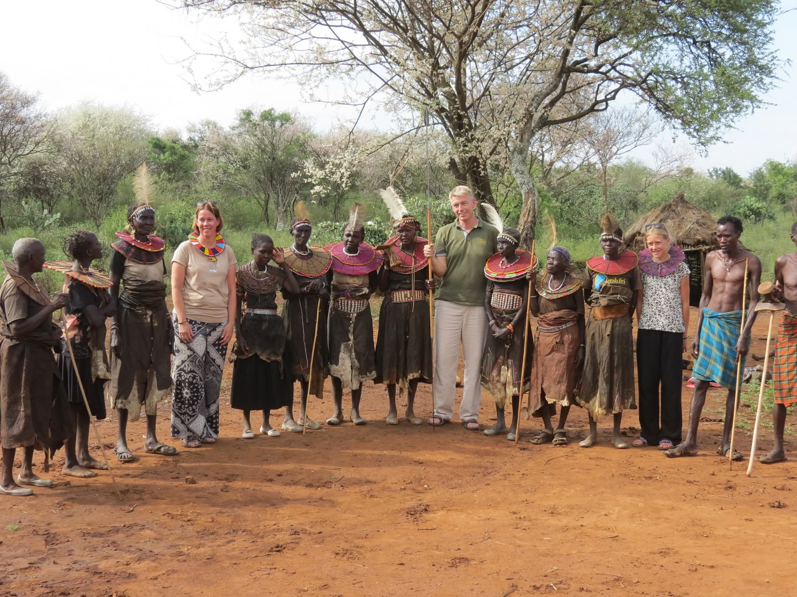
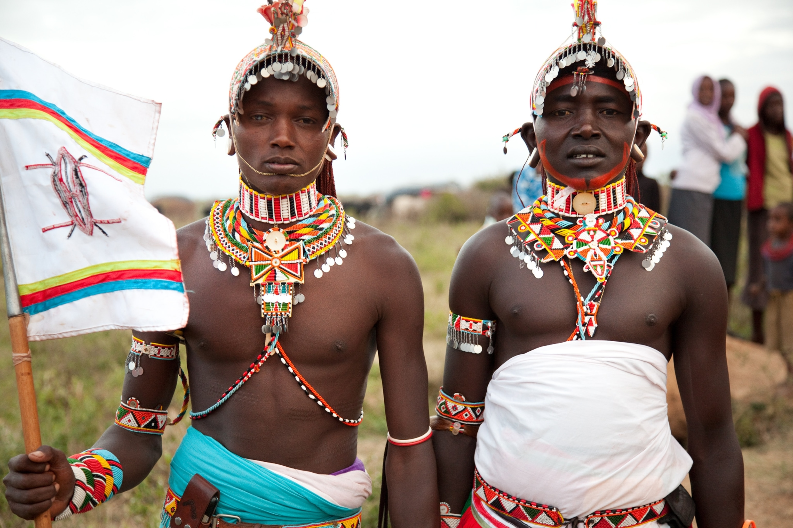
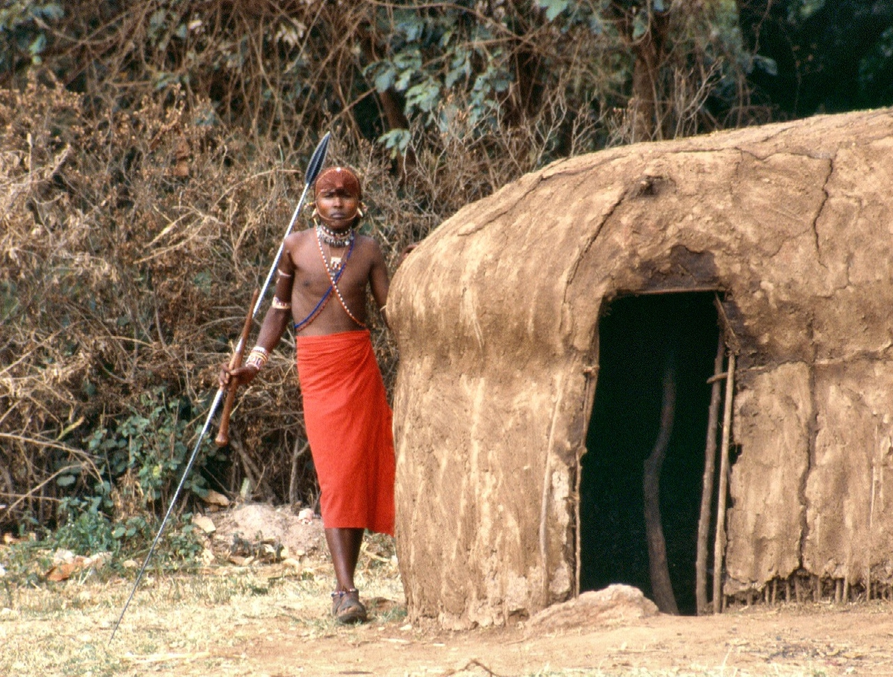
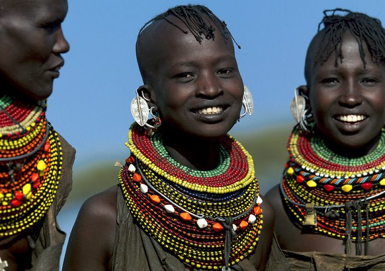
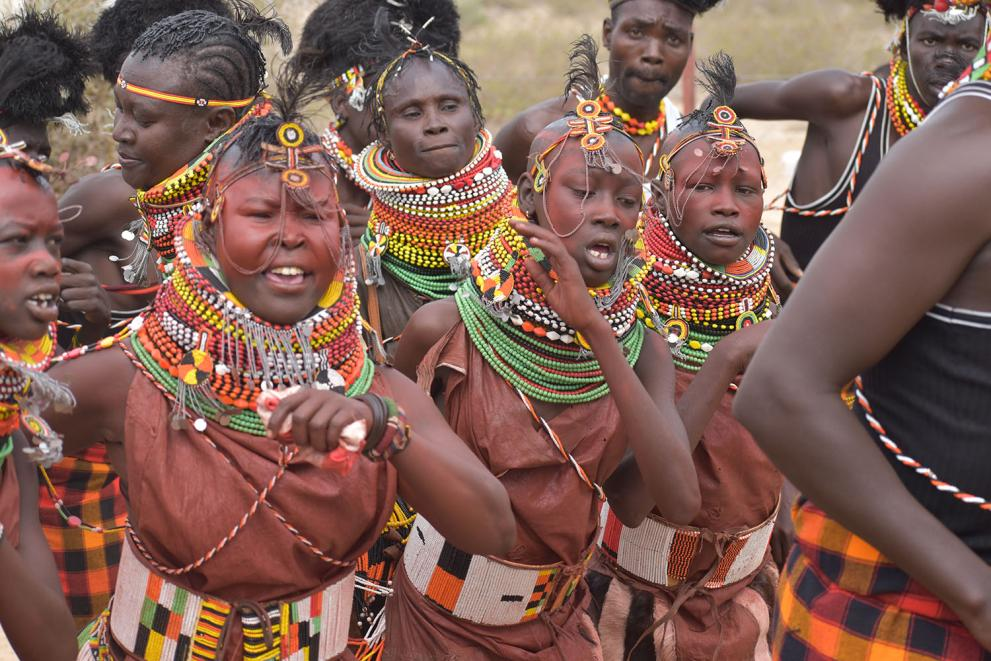
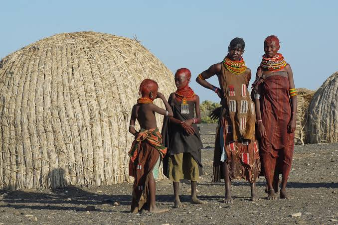

Beyond the Safari: An In-Depth Cultural Pilgrimage into the Heart of Kenya's Tribes
When the world imagines Kenya, it sees a canvas of endless savannahs, dramatic escarpments, and the great animal migrations. It’s a vision of raw, untamed nature. But what if the most profound wilderness to explore is not the landscape, but the human spirit? What if the most captivating narratives are not told in the roar of a lion, but in the whispered stories of elders, the intricate patterns of beadwork, and the rhythmic pulse of a ceremonial dance?
Kenya is a nation of stunning ethnic diversity, home to over 40 distinct tribes, each a universe of unique traditions, beliefs, and social structures. A cultural tour here is not a side attraction; it is a deep dive into the living, breathing soul of the nation. It’s a journey that challenges perspectives, enriches the understanding of humanity, and leaves an indelible mark on your spirit.
This guide is your compass to such a journey. We will move beyond the well-trodden tourist paths to explore the rich cultural tapestries of seven remarkable communities: the pastoralist Pokot, Samburu, and Turkana; the coastal Mijikenda; the resilient Rendille; the lakeside Luo; and the agricultural powerhouse, the Kikuyu. We will detail not just who they are, but how you can ethically and meaningfully engage with their world, including the best routes to take.
1. The Pokot of Baringo: Masters of the Rugged Frontier
Nestled in the arid and semi-arid lands of West Pokot and Baringo counties,the Pokot people are a Nilotic community synonymous with resilience. They are primarily pastoralists, whose lives are intrinsically linked to their cattle, goats, and camels. The land they inhabit is harsh and beautiful—a dramatic landscape of rolling hills, deep valleys, and volcanic rock. This environment has forged a culture that is proud, self-sufficient, and deeply spiritual, with a complex social structure revolving around age-sets.

Cultural Highlights and Experiences:
Sapana: The Warrior's Ceremony: This is the most iconic of Pokot ceremonies, marking the graduation of a young man from Moran (warrior) to senior warrior status. It's a vibrant, all-day event filled with singing, dancing, and feasting. The warriors, adorned with elaborate ochre and clay hairstyles, feathered headdresses, and beaded regalia, perform energetic jumps, showcasing their strength and agility to the community. Witnessing a Sapana is a rare and privileged glimpse into a ancient rite of passage.
.jpeg) Beadwork and Adornment:
Beadwork and Adornment: Pokot beadwork is a language in itself. The colors and patterns of the intricate necklaces, earings, and headpieces worn by women denote their social status—whether they are unmarried, engaged, or married. The weight and complexity of the beads can also signify a family's wealth.
Traditional Homesteads: Visiting a Pokot manyatta (homestead) is an education in practical architecture. The low, dome-shaped huts are constructed from sticks, mud, and cow dung, designed to be cool during the day and warm at night. Each homestead is a fortified unit, reflecting the historical need for defense.
.jpeg) Engaging with Elders:
Engaging with Elders: The council of elders, known as the Kokwo, holds immense power. Spending time with them (through a translator) offers profound insights into Pokot law, conflict resolution, and their intricate knowledge of herbal medicine and the ecosystem.
Best Routes to Experience the Pokot:
Route from Nairobi: Nairobi -> Nakuru ->Lake Baringo.This is a tarmac road all the way, taking approximately 4 hours by road. You can combine a visit to the Pokot with a trip to Lake Baringo. From the lake, head 25 km north towards Loruk to a place called Chepilat.This route is more adventurous and offers stunning landscapes but requires meticulous planning and a local guide who knows the area and can facilitate cultural introductions.
Ethical Considerations: Always arrange visits through a reputable tour operator who works with specific communities and has prior consent. The Sapana ceremony is a sacred event, not a performance; photography should be discreet and always permission-based.
Read Yvonne's family experience to the pokot village
2. The Samburu of Northern Kenya: The Butterfly People

Often called the"Butterfly People" due to the bright colors of their traditional dress, or the cousins of the Maasai, the Samburu are a semi-nomadic Nilotic people who inhabit the rugged and beautiful plains of Samburu County. Their culture is profoundly spiritual and animistic, with a belief system centered around a single god, Nkai. Like the Pokot, their society is structured around age-sets, and their entire existence revolves around their livestock.
Cultural Highlights and Experiences:
The Moran (Lmurran) Culture: The young Samburu warriors are iconic figures. They spend their days herding livestock, composing songs, and adorning themselves with intricate beadwork. Spending a day with a group of Morans, learning about their responsibilities and their role as protectors of the community, is a captivating experience.

Traditional Dancing and Singing: Samburu dances are graceful and rhythmic. Women form a circle and sing in a hauntingly beautiful polyphonic style, while the men, adorned in their finest, perform a graceful, upright jumping dance. The songs often tell stories of bravery, love, or current events.
Beadwork as Identity: Samburu beadwork is exceptionally fine and symbolic. Each piece tells a story—red beads represent blood and bravery, white for peace and purity, and blue for the sky and the energy that comes from God. The large, flat necklaces worn by married women are particularly striking.
Visit a Manyatta: A visit to a Samburu homestead is a must. You'll learn how the huts are built by women, the significance of the central enclosure for the livestock at night, and the daily routines of this pastoral life.

Best Routes to See the Samburu
The most accessible way to experience the Samburu is by visiting the community conservancies surrounding Samburu National Reserve.
Primary Route: Nairobi -> Nanyuki -> Isiolo -> Archer's Post -> Samburu National Reserve. The drive from Nairobi to Archer's Post is on good tarmac and takes about 5-6 hours. From Archer's Post, you enter the domain of the Samburu. Lodges and camps in areas like Kalama Conservancy, Samburu Village, and Westgate Conservancy work directly with local communities and can arrange guided visits to authentic manyattas.
For a more in-depth experience, venture further north to towns like Wamba or Maralal. Maralal, in particular, is a vibrant Samburu town and hosts a famous camel derby. The landscapes here are more remote and the cultural interactions less curated.
Ethical Considerations: Support community-run conservancies where tourism revenue directly benefits the local people. Be respectful when taking photographs, especially of the Morans and elders.
3. The Turkana of Lake Turkana: The People of the Jade Sea

In the harsh,otherworldly landscape surrounding Lake Turkana, the world's largest permanent desert lake, live the Turkana people. A Nilotic community, they are renowned for their incredible adaptability and resilience in one of the most inhospitable climates on earth. Their culture is a testament to human survival, built around fishing, pastoralism, and a complex spiritual belief system.
Cultural Highlights and Experiences:
The Annual Turkana Festival: Held in Loiyangalani, this is the single best opportunity to immerse yourself in Turkana culture and that of their neighbors (Rendille, El Molo, Samburu, etc.). It's a vibrant celebration of traditional music, dance, dress, and rituals, designed to promote peace and cultural preservation.

Traditional Attire and Hairstyles: Turkana women are known for their stunning, multi-beaded necklaces and their beautifully complex, ochre-braided hairstyles. Men often carry a stool (ekicholong), which serves as a headrest and a symbol of their status.
Spiritual Beliefs and Diviners: The Turkana have a rich spiritual world with a high god, Akuj, and numerous diviners (emuron) who act as intermediaries, foretell the future, and heal the sick. Learning about their beliefs provides a window into a worldview deeply connected to the forces of nature.
Life on the Lake: Visit a fishing village like Kalokol or Ferguson's Gulf to see how the Turkana have harnessed the resources of the "Jade Sea." You'll see traditional, hand-crafted boats and learn about fishing techniques passed down through generations.

Best Routes to See the Turkana:
Reaching Turkana is an expedition in itself, but the journey is as rewarding as the destination.
The Eastern Route (Most Common): Nairobi -> Isiolo -> Marsabit -> Loiyangalani. This is the famous "Marsabit-Loiyangalani" road. It is a rough, challenging track that traverses breathtakingly barren landscapes, including the Chalbi Desert. A 4x4 vehicle and a skilled driver are non-negotiable. This route takes you directly to Loiyangalani on the southeastern shore of the lake.
The Western Route (via Lodwar): Nairobi -> Kitale -> Lodwar. The road from Kitale to Lodwar has been significantly improved. Lodwar is the main Turkana town and a bustling hub. From here, you can access the central and western parts of the lake. This route is generally faster and less rugged than the eastern one.
By Air: The most practical option for those with limited time is to fly from Nairobi Wilson Airport to Lodwar or Loiyangalani.
The Turkana region is very poor. It is crucial to travel with a responsible operator who contributes to the local economy. Be mindful that this is a sensitive border region, so always follow the advice of your guide